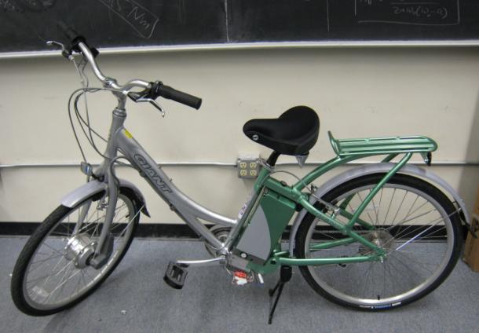

Auto-Adaptive Power Assist Systems
Introduction
This project investigates a class of power assistive systems that add assistive power or force to the power or force input supplied by a human. Such systems involve bilateral coupling between the human, actuator (power assisting device) and environment, which makes the present problem unique when compared with the human-machine interaction in robotics applications. The application addressed in this project involves an electric bicycle.
Technical Objectives
The technical objectives of this research are as follows:
- Study intelligent power assist systems, which adaptively handle interaction between human-machine-environment.
- Develop signal processing and control algorithms for the machine to assist the human by sensing the human's intention and augmenting assistive power in optimal manners and to isolate human from undesired environmental disturbance inputs while retaining essential bilateral physical coupling between the human and the environment.
- Demonstrate the advantages of signal processing and control algorithms experimentally.
Experimental Setup

The electric bicycle used for the experimental investigation for this project is equipped with a human input torque sensor, a velocity sensor and an encoder measuring the crank angle. The motor is mounted in the front wheel hub and is controlled through a laptop computer during experiments. NI Labview platform and NI usb-DAQ products are used for implementing the control schemes.
Research Topics
Robust disturbance observer (DOB) based power-assist system
A robust disturbance observer based power-assist scheme is proposed to deal with the environmental disturbances, such as gravitational force and frictional force, under uphill riding condition. The robust design guarantees the robust stability of the overall system under plant uncertainties. The disturbance observer provides flexible assistive power through estimating and compensating for the environmental disturbances.
Out-of-phase power-assist system
Research work is being done to investigate the out-of-phase power-assistance scheme for uphill riding condition. The aim of the proposed scheme is to address the unsmooth velocity profile issue at low speeds caused by the non-uniformity of the rider's torque input. Through implementing this approach, we are expecting improved human comfort during low-speed uphill riding.
Researchers
Fan, Xuan (graduated) |
|